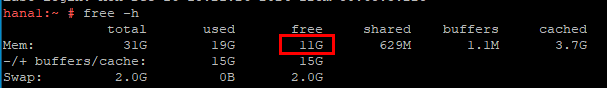

The backup or restoration job fails. Check whether the OOM log file generated at the job time point exists in the SAP HANA installation directory/trace directory. If it exists, memory overflow occurs.
The log file name is as follows:
preprocessor_hana1.30002.rtedump.20240117-021229.018590.oom.trc
The backup or restoration operation fails because memory overflow occurs in the production environment.
Ensure that the remaining memory is greater than 10 GB after the SAP HANA production environment is installed.
To check the remaining memory in the production environment, perform the following steps:
free -h
The command output is as follows, indicating that the remaining memory in the production environment is 11 GB.
